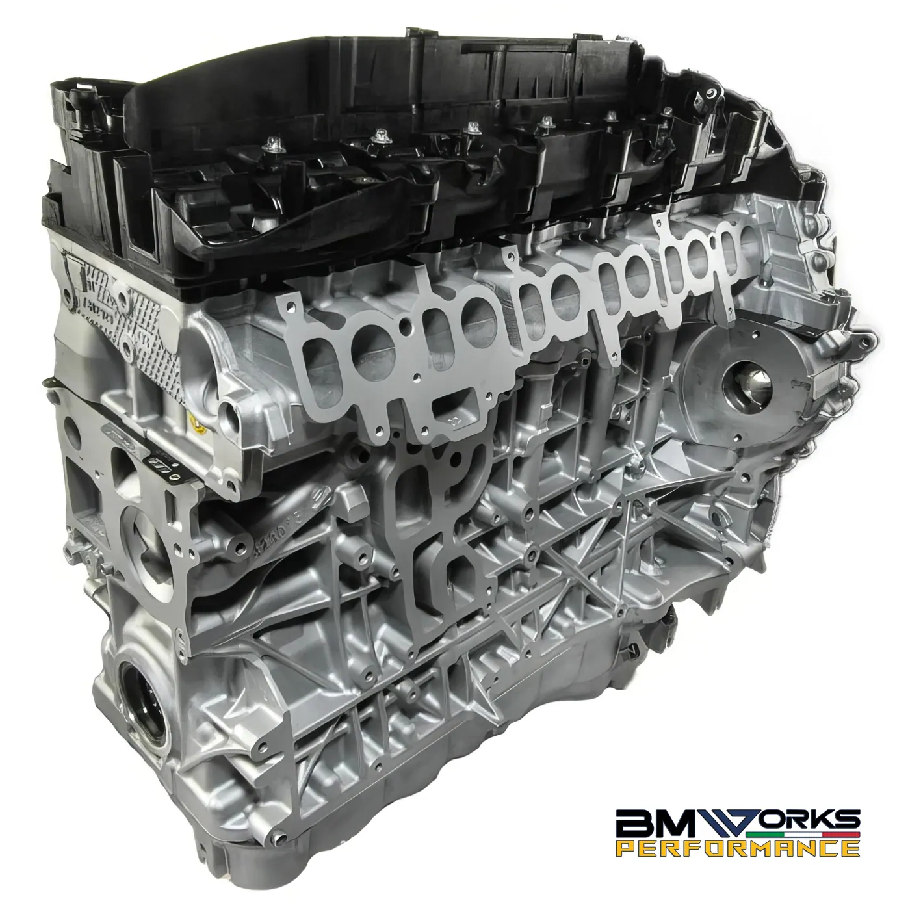
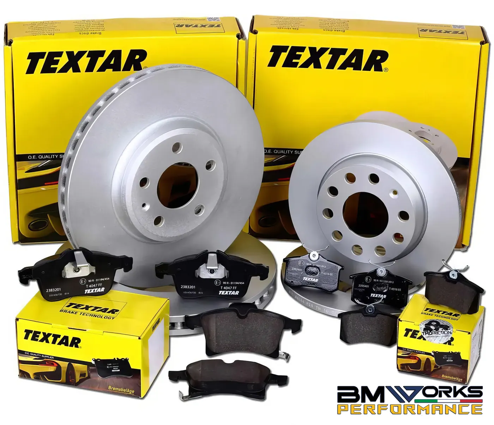
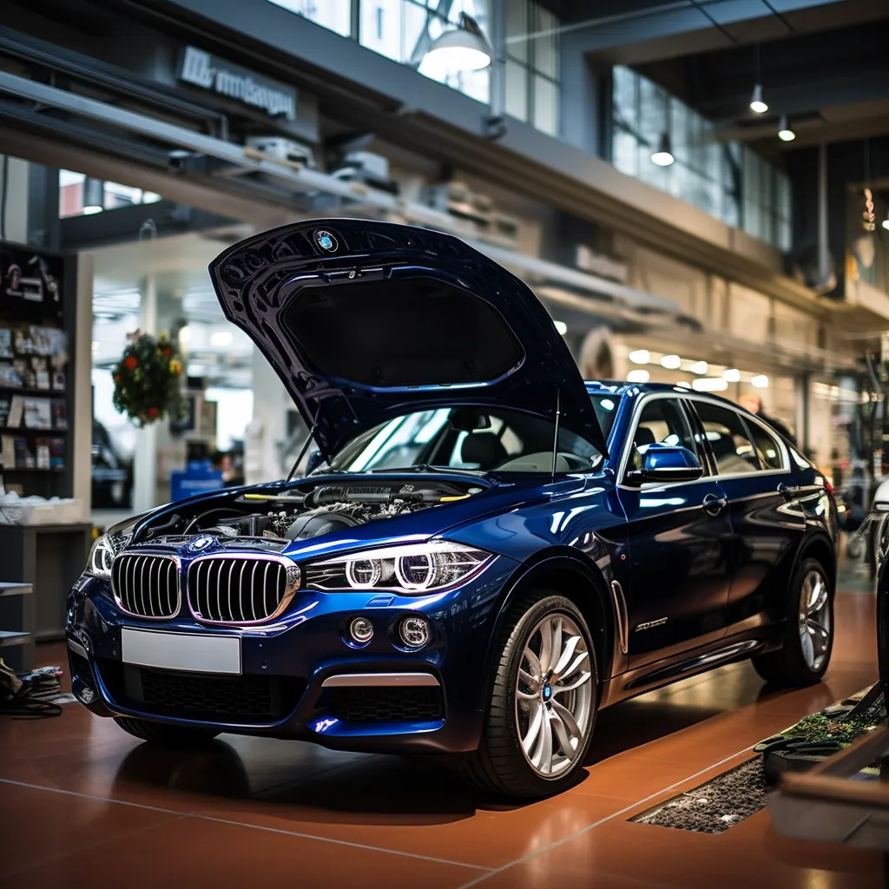
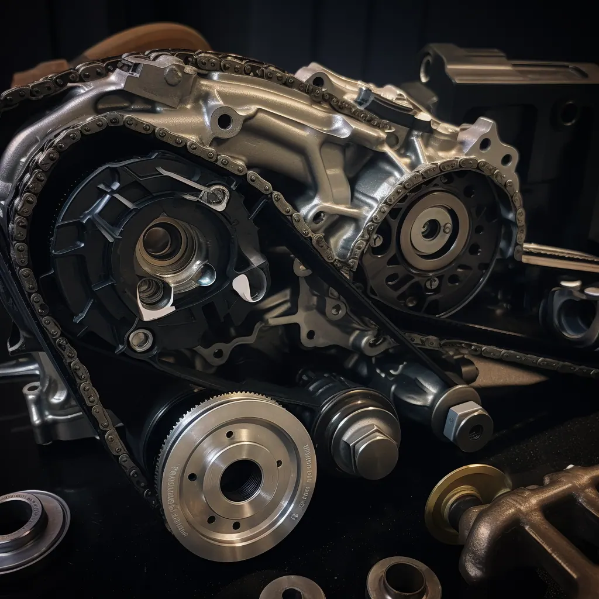
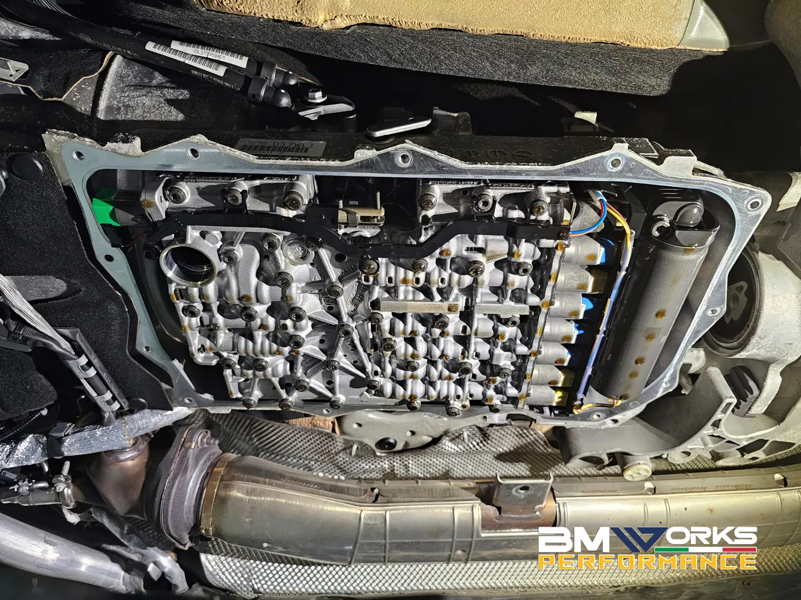

Specialista indipendente BMW e MINI
Riparazioni meccaniche ed elettriche per BMW e MINI
BMWorks Performance, con sede a Milano, è il punto di riferimento per riparazioni meccaniche ed elettriche specializzate su BMW e MINI.
Riparazioni meccaniche specializzate
Le riparazioni meccaniche per BMW e MINI includono:
- Sostituzione catene di distribuzione: essenziale per il corretto funzionamento del motore.
- Sostituzione guarnizione testa e coperchio bilancieri: cruciale per mantenere l’integrità del motore.
- Ricondizionamento e sostituzione pompe carburante ad alta pressione e iniettori: per migliorare l’efficienza del carburante.
- Sostituzione Vanos e motore Valvetronic: fondamentale per la regolazione delle valvole.
- Riparazione del sistema di raffreddamento e sostituzione della pompa dell’acqua: per prevenire il surriscaldamento del motore.
- Eliminazione delle farfalle di turbolenza (swirl flaps) e revisione/sostituzione della turbina: per ottimizzare le prestazioni del motore.
- Pulizia e rimozione del DPF: per mantenere puliti i sistemi di scarico.

Riparazioni elettriche avanzate
I servizi di riparazione elettrica per BMW e MINI comprendono:
- Alternatori e motorini di avviamento: componenti cruciali per l’avvio del veicolo.
- Attuatori turbina e sistemi elettrici del motore: per un’efficienza ottimale.
- Chiusura centralizzata e alzacristalli elettrici: per la comodità e la sicurezza.
- Specchi elettrici, luci e moduli: per garantire visibilità e funzionalità.
- Sistemi ABS e DSC: per la sicurezza in frenata e il controllo della stabilità.
- Moduli e sensori di parcheggio, radio/NBT e Bluetooth: per un’esperienza di guida moderna e confortevole.
- Riparazione del cablaggio: per mantenere l’integrità del sistema elettrico.
Manutenzione preventiva e diagnostica avanzata
Una delle pietre miliari dei servizi offerti da BMWorks Performance è la manutenzione preventiva, fondamentale per evitare guasti improvvisi e costosi. Grazie all’uso di strumentazione diagnostica all’avanguardia, siamo in grado di individuare e prevenire problemi prima che si manifestino, garantendo così la longevità e l’affidabilità della vostra BMW o MINI. La nostra diagnostica avanzata permette di identificare malfunzionamenti e bisogni di manutenzione, spesso prima che questi diventino evidenti al conducente.

Personalizzazione e upgrade delle prestazioni
Al di là delle riparazioni standard, BMWorks Performance offre anche servizi personalizzati per coloro che desiderano migliorare le prestazioni del loro veicolo. Questo include tuning del motore, upgrade dei sistemi di scarico e ottimizzazione della trasmissione per massimizzare potenza ed efficienza. Questi servizi sono ideali per gli appassionati che desiderano un’esperienza di guida unica e su misura, mantenendo sempre gli standard di qualità e sicurezza che caratterizzano le auto BMW e MINI.
In aggiunta, offriamo la personalizzazione estetica, come la modifica dei cerchi e l’installazione di kit carrozzeria sportivi, per chi desidera non solo un’auto performante, ma anche dal design accattivante. La scelta dei materiali di alta qualità e l’attenzione ai dettagli sono fondamentali per noi, assicurando che ogni modifica non solo migliori l’aspetto e le prestazioni, ma rispetti anche l’integrità originale del veicolo.
Assistenza clienti e garanzie
La soddisfazione del cliente è una priorità assoluta per BMWorks Performance. Ogni intervento di riparazione o manutenzione è accompagnato da una dettagliata spiegazione delle procedure effettuate, insieme a consigli su come mantenere al meglio il veicolo. Inoltre, tutte le riparazioni sono garantite, offrendo ai clienti tranquillità e fiducia nella qualità dei servizi ricevuti.
BMWorks Performance offre anche un servizio post-vendita proattivo, contattando i clienti per assicurarsi che siano completamente soddisfatti e che le loro auto funzionino al meglio. La nostra politica di trasparenza e onestà ci permette di costruire relazioni di lungo termine con i nostri clienti. Ogni intervento viene eseguito con cura e attenzione ai dettagli, utilizzando ricambi originali di alta qualità. Contattaci oggi stesso per un preventivo!
Dalla nostra officina


Altri servizi

01Servizio e manutenzione BMW e MINI
Tagliandi registrati nel database BMW, con ricambi originali e sistema CBS.
Scopri di più
02Sostituzione catene di distribuzione
Intervento specialistico sui motori BMW e MINI, in particolare N47 e N57.
Scopri di più
03Servizio cambio automatico BMW
Sostituzione olio e filtro con ZF Lifeguard Fluid 8 per trasmissioni sempre al meglio.
Scopri di piùPrenota il tuo appuntamento
Chiamaci, scrivici su WhatsApp o inviaci un messaggio: ti rispondiamo con un preventivo chiaro.